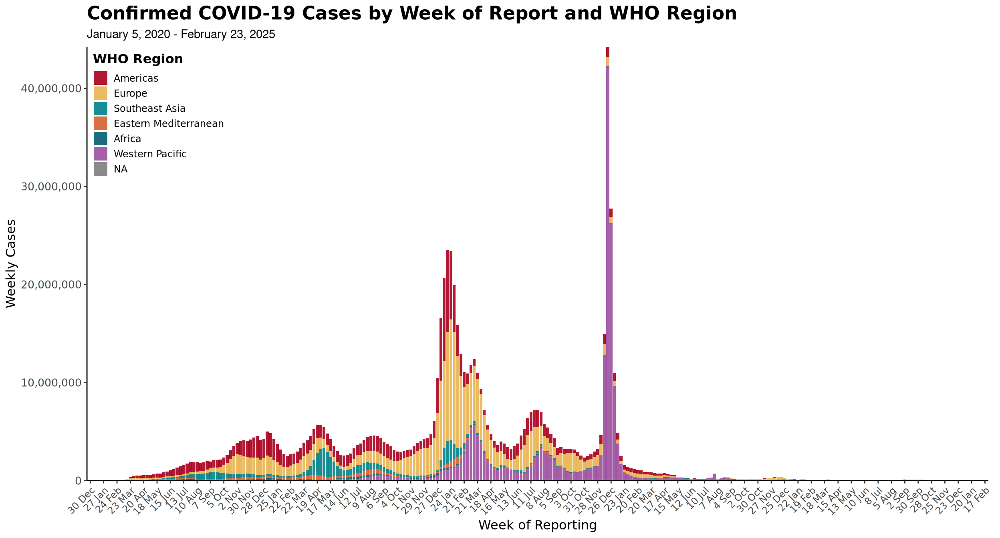

Data: The Frankenstein Dataset
onetable - stored metadata with iso2 and iso3 codes, country names, WHO/State/WorldBank regions, and UN population estimatesget_covid_df() - COVID dataframe from WHO and appended with select JHU obscalc_add_risk() - Add risk matrix calculations to dataframeget_vax() - Get vaccination data from OWIDget_combined_table(type=c("WHO", "Both"), geometry=FALSE) - Combine all of the above into one large dataframe, optionally add geometry
This snippet produces the master dataframe with all the variables required for all of the sitrep graphics.
df_who <- get_combined_table("WHO")
df_both <- get_combined_table("Both")Plots
plot_epicurve(df, transparent = T)
The “plot_epicurve” function should take in the df with only WHO observations in order to match the same curve on the who.int dashboard. The individual epicurves for each region can be run simply by filtering for one region in the dataframe. The function will detect that the region column has only one region and will produce the epicurve accordingly.
# Global
epi_curve_global <- plot_epicurve(df_who, transparent = T)
epi_curve_global
plot_epicurve(df_who, transparent = F)
# Regions
for (r in unique(na.omit(df_who$who_region))) {
epi_curve_regional <- plot_epicurve(filter(df_who, who_region == r), transparent = F)
print(epi_curve_regional)
}


plot_riskmatrix(df)
Note for labeling purposes, the labels variable should be added to the dataframe specifying the top 10 countries for weekly average incidence, week case percent change, and weekly total cases. Exclusion criteria: Countries with population less than 10 million and countries with weekly cases totals less than 100.
global_risk_matrix <- df_both %>%
filter(date == sunday_date) %>%
filter(population >= 10000000) %>% # Exclude population less than 10M
filter(week_case >= 100) %>%
mutate(
rank_inc = dense_rank(desc(week_case_incidence)),
rank_per = dense_rank(desc(percent_change_case)),
rank_cas = dense_rank(desc(week_case))
) %>%
mutate(labels = case_when(
rank_inc %in% 1:10 ~ country,
rank_per %in% 1:10 ~ country,
rank_cas %in% 1:10 ~ country
)) %>%
plot_riskmatrix()
global_risk_matrix

Maps
By default, get_combined_table() does not return geometry. This is preferable, since the size of the table is quite large and the geometry list column takes up a lot of space in memory. However, if we want to map these data, we can either call get_combined_table("Both", geometry = TRUE), or join with country_coords after filtering, like so:
# Filter to only observations with date as of Sunday
# and join in geometry
df_both_mapping <- df_both %>%
filter(date == sunday_date) %>%
left_join(select(country_coords, id, geometry), by = "id")map_burden(df)
The “map_burden” function requires a result column where weekly average incidence is converted into factors using “cut”. The dataframe normally used is WHO appended with JHU and filtered for the report date. The region maps can also be produced by simply filtering the input dataframe for the specific region. Again the function will detect the number of regions provided and will act accordingly.
burden_map_global <- df_both_mapping %>%
mutate(result = cut(week_case_incidence, breaks = c(-0.1, 1, 10, 25, Inf))) %>%
map_burden()
burden_map_global
for (r in unique(na.omit(df_both$who_region))) {
burden_map_regional <- df_both_mapping %>%
filter(who_region == r) %>%
mutate(result = cut(week_case_incidence, breaks = c(-0.1, 1, 10, 25, Inf))) %>%
map_burden()
print(burden_map_regional)
}


map_trend(df)
The “map_trend” function requires a result column where weekly percent change is converted into factors using “cut”. The dataframe normally used is WHO appended with JHU and filtered for the report date. The region maps can also be produced by simply filtering the input dataframe for the specific region. Again the function will detect the number of regions provided and will act accordingly.
trend_map_global <- df_both_mapping %>%
mutate(result = cut(percent_change_case, breaks = c(-Inf, -50, 0, 50, 100, 200, Inf))) %>%
map_trend()
trend_map_global
for (r in unique(na.omit(df_both_mapping$who_region))) {
trend_map_reg <- df_both_mapping %>%
filter(who_region == r) %>%
mutate(result = cut(percent_change_case, breaks = c(-Inf, -50, 0, 50, 100, 200, Inf))) %>%
map_trend()
print(trend_map_reg)
}


map_vaccinations(df, vac_type = c("People", "Fully"))
global_vax_map <- df_both_mapping %>%
mutate(result = cut(people_vaccinated_per_hundred, breaks = c(0, 1, 3, 10, 30, Inf))) %>%
group_by(country) %>%
filter(!is.na(result)) %>%
filter(date == max(date)) %>%
ungroup() %>%
map_vaccinations(., vac_type = "People")
global_vax_map
Tables
df_both %>%
filter(date == sunday_date) %>%
select(country = who_country, value1 = week_case, value2 = percent_change_case) %>%
arrange(desc(value1)) %>%
head(10) %>%
table_10mostcases(run_date = format(sunday_date, "%B %d, %Y"))| 10 Countries/ Areas with Most New Cases | ||
|---|---|---|
| Country/ Area | New Cases This Week |
% Change Last Week1 |
| United States of America | 4,982,054 | −10.7 |
| France | 2,427,055 | 20.6 |
| India | 2,115,100 | 32.7 |
| Italy | 1,231,741 | −2.9 |
| Spain | 824,799 | −11.9 |
| Brazil | 824,579 | 72.9 |
| Argentina | 761,534 | −4.5 |
| Germany | 715,470 | 57.1 |
| United Kingdom | 640,838 | −21.2 |
| Israel | 493,656 | 60.4 |
| Data Source: WHO Coronavirus Disease (COVID-19) Dashboard | ||
| Data as of January 23, 2022 | ||
|
1
Percent change in cases of most recent 7 days to 7 days prior
|
||
for (r in unique(na.omit(df_both$who_region))) {
tab_out <- df_both %>%
filter(date == sunday_date) %>%
filter(who_region == r) %>%
select(country = who_country, value1 = week_case, value2 = percent_change_case) %>%
arrange(desc(value1)) %>%
head(10) %>%
table_10mostcases(., type = r, run_date = format(sunday_date, "%B %d, %Y"))
print(htmltools::tagList(tab_out))
}| 10 (AMRO) Countries/ Areas with Most New Cases | ||
|---|---|---|
| Country/ Area |
New Cases This Week |
% Change Last Week1 |
| United States of America | 4,982,054 | −10.7 |
| Brazil | 824,579 | 72.9 |
| Argentina | 761,534 | −4.5 |
| Peru | 326,730 | 91.9 |
| Colombia | 210,161 | 1.5 |
| Mexico | 195,933 | −32.1 |
| Canada | 171,610 | −28.0 |
| Chile | 82,574 | 98.1 |
| Bolivia | 79,218 | 9.1 |
| Uruguay | 78,411 | 46.4 |
| Data Source: WHO Coronavirus Disease (COVID-19) Dashboard | ||
| Data as of January 23, 2022 | ||
|
1 Percent change in cases of most recent 7 days to 7 days prior |
||
| 10 (EMRO) Countries/ Areas with Most New Cases | ||
|---|---|---|
| Country/ Area |
New Cases This Week |
% Change Last Week1 |
| Tunisia | 66,015 | 67.2 |
| Morocco | 50,753 | 10.1 |
| Lebanon | 44,217 | −2.2 |
| Pakistan | 39,899 | 126.3 |
| Iraq | 38,623 | 178.3 |
| Saudi Arabia | 37,866 | 9.2 |
| Jordan | 36,623 | 82.7 |
| Kuwait | 32,279 | 7.9 |
| Iran | 26,605 | 87.0 |
| Qatar | 25,143 | −11.0 |
| Data Source: WHO Coronavirus Disease (COVID-19) Dashboard | ||
| Data as of January 23, 2022 | ||
|
1 Percent change in cases of most recent 7 days to 7 days prior |
||
| 10 (AFRO) Countries/ Areas with Most New Cases | ||
|---|---|---|
| Country/ Area |
New Cases This Week |
% Change Last Week1 |
| Réunion | 31,401 | 93.2 |
| South Africa | 22,795 | −35.1 |
| Algeria | 9,052 | 141.9 |
| Botswana | 6,268 | −19.9 |
| Zambia | 6,175 | −54.1 |
| Ethiopia | 5,454 | −57.9 |
| Cameroon | 4,447 | NA |
| Mozambique | 3,618 | −61.5 |
| Rwanda | 3,100 | −30.0 |
| Seychelles | 3,085 | −25.2 |
| Data Source: WHO Coronavirus Disease (COVID-19) Dashboard | ||
| Data as of January 23, 2022 | ||
|
1 Percent change in cases of most recent 7 days to 7 days prior |
||
| 10 (EURO) Countries/ Areas with Most New Cases | ||
|---|---|---|
| Country/ Area |
New Cases This Week |
% Change Last Week1 |
| France | 2,427,055 | 20.6 |
| Italy | 1,231,741 | −2.9 |
| Spain | 824,799 | −11.9 |
| Germany | 715,470 | 57.1 |
| United Kingdom | 640,838 | −21.2 |
| Israel | 493,656 | 60.4 |
| Turkey | 478,562 | −1.6 |
| Belgium | 345,203 | 77.4 |
| Portugal | 323,553 | 35.2 |
| Russia | 304,657 | 99.5 |
| Data Source: WHO Coronavirus Disease (COVID-19) Dashboard | ||
| Data as of January 23, 2022 | ||
|
1 Percent change in cases of most recent 7 days to 7 days prior |
||
| 10 (WPRO) Countries/ Areas with Most New Cases | ||
|---|---|---|
| Country/ Area |
New Cases This Week |
% Change Last Week1 |
| Australia | 302,608 | −36.0 |
| Japan | 268,284 | 180.9 |
| Philippines | 219,146 | −5.3 |
| Viet Nam | 118,582 | −9.8 |
| Korea (South) | 41,727 | 50.2 |
| Malaysia | 23,752 | 7.9 |
| Singapore | 19,290 | 211.9 |
| Mongolia | 18,719 | 43.3 |
| Laos | 5,343 | −14.3 |
| Guam | 2,600 | 33.4 |
| Data Source: WHO Coronavirus Disease (COVID-19) Dashboard | ||
| Data as of January 23, 2022 | ||
|
1 Percent change in cases of most recent 7 days to 7 days prior |
||
| 10 (SEARO) Countries/ Areas with Most New Cases | ||
|---|---|---|
| Country/ Area |
New Cases This Week |
% Change Last Week1 |
| India | 2,115,100 | 32.7 |
| Bangladesh | 67,425 | 180.8 |
| Nepal | 56,656 | 167.9 |
| Thailand | 53,015 | −3.5 |
| Indonesia | 14,729 | 170.1 |
| Maldives | 13,880 | 151.0 |
| Sri Lanka | 5,539 | 18.4 |
| Burma | 927 | −14.3 |
| Bhutan | 721 | 390.5 |
| Timor-Leste | 5 | −28.6 |
| Data Source: WHO Coronavirus Disease (COVID-19) Dashboard | ||
| Data as of January 23, 2022 | ||
|
1 Percent change in cases of most recent 7 days to 7 days prior |
||
df_both %>%
filter(date == sunday_date) %>%
select(country = who_country, value1 = week_case_incidence, value2 = percent_change_case) %>%
arrange(desc(value1)) %>%
head(10) %>%
table_10incidence(., run_date = format(sunday_date, "%B %d, %Y"))| 10 Countries/ Areas with Highest Incidence | ||
|---|---|---|
| Country/ Area | Incidence Per 100,0001 |
% Change Last Week2 |
| Faroe Islands | 1,182.7 | 83.9 |
| Israel | 802.3 | 60.4 |
| Denmark | 616.3 | 62.0 |
| Guadeloupe | 610.3 | 31.4 |
| Andorra | 579.3 | −9.9 |
| France | 529.9 | 20.6 |
| Saint Martin | 508.2 | −39.2 |
| Réunion | 497.5 | 93.2 |
| Bonaire, Sint Eustatius, and Saba | 496.4 | −11.7 |
| Greenland | 487.1 | −36.4 |
| Data Source: WHO Coronavirus Disease (COVID-19) Dashboard | ||
| Data as of January 23, 2022 | ||
|
1
Average daily incidence per 100,000 in past 7 days
2
Percent change in cases of most recent 7 days to 7 days prior
|
||
for (r in unique(na.omit(df_both$who_region))) {
tab_out <- df_both %>%
filter(date == sunday_date) %>%
filter(who_region == r) %>%
select(country = who_country, value1 = week_case_incidence, value2 = percent_change_case) %>%
arrange(desc(value1)) %>%
head(10) %>%
table_10incidence(., type = r, run_date = format(sunday_date, "%B %d, %Y"))
print(htmltools::tagList(tab_out))
}| 10 (AMRO) Countries/ Areas with Highest Incidence | ||
|---|---|---|
| Country/ Area |
Incidence Per 100,0001 |
% Change Last Week2 |
| Guadeloupe | 610.3 | 31.4 |
| Saint Martin | 508.2 | −39.2 |
| Bonaire, Sint Eustatius, and Saba | 496.4 | −11.7 |
| Saint Pierre and Miquelon | 453.0 | 28.9 |
| Martinique | 445.8 | −13.6 |
| Saint Barthélemy | 383.5 | −47.0 |
| Cayman Islands | 367.6 | 21.8 |
| Uruguay | 321.4 | 46.4 |
| Curaçao | 292.8 | −43.1 |
| Aruba | 285.3 | −51.8 |
| Data Source: WHO Coronavirus Disease (COVID-19) Dashboard | ||
| Data as of January 23, 2022 | ||
|
1 Average daily incidence per 100,000 in past 7 days
2 Percent change in cases of most recent 7 days to 7 days prior |
||
| 10 (EMRO) Countries/ Areas with Highest Incidence | ||
|---|---|---|
| Country/ Area |
Incidence Per 100,0001 |
% Change Last Week2 |
| Bahrain | 180.2 | 51.7 |
| Qatar | 122.6 | −11.0 |
| Kuwait | 106.5 | 7.9 |
| Lebanon | 93.3 | −2.2 |
| Tunisia | 79.0 | 67.2 |
| Jordan | 50.9 | 82.7 |
| United Arab Emirates | 29.6 | 7.2 |
| Oman | 25.8 | 137.0 |
| Palestinian Territory | 19.9 | 139.9 |
| Morocco | 19.4 | 10.1 |
| Data Source: WHO Coronavirus Disease (COVID-19) Dashboard | ||
| Data as of January 23, 2022 | ||
|
1 Average daily incidence per 100,000 in past 7 days
2 Percent change in cases of most recent 7 days to 7 days prior |
||
| 10 (AFRO) Countries/ Areas with Highest Incidence | ||
|---|---|---|
| Country/ Area |
Incidence Per 100,0001 |
% Change Last Week2 |
| Réunion | 497.5 | 93.2 |
| Seychelles | 445.6 | −25.2 |
| Mayotte | 98.8 | −78.7 |
| Botswana | 37.4 | −19.9 |
| Cabo Verde | 32.3 | −69.3 |
| Sao Tome and Principe | 20.5 | −57.8 |
| Mauritania | 8.3 | −55.8 |
| Mauritius | 6.2 | −1.4 |
| Namibia | 5.8 | −56.9 |
| South Africa | 5.4 | −35.1 |
| Data Source: WHO Coronavirus Disease (COVID-19) Dashboard | ||
| Data as of January 23, 2022 | ||
|
1 Average daily incidence per 100,000 in past 7 days
2 Percent change in cases of most recent 7 days to 7 days prior |
||
| 10 (EURO) Countries/ Areas with Highest Incidence | ||
|---|---|---|
| Country/ Area |
Incidence Per 100,0001 |
% Change Last Week2 |
| Faroe Islands | 1,182.7 | 83.9 |
| Israel | 802.3 | 60.4 |
| Denmark | 616.3 | 62.0 |
| Andorra | 579.3 | −9.9 |
| France | 529.9 | 20.6 |
| Greenland | 487.1 | −36.4 |
| San Marino | 469.6 | −1.1 |
| Portugal | 454.6 | 35.2 |
| Slovenia | 426.7 | 55.5 |
| Belgium | 423.9 | 77.4 |
| Data Source: WHO Coronavirus Disease (COVID-19) Dashboard | ||
| Data as of January 23, 2022 | ||
|
1 Average daily incidence per 100,000 in past 7 days
2 Percent change in cases of most recent 7 days to 7 days prior |
||
| 10 (WPRO) Countries/ Areas with Highest Incidence | ||
|---|---|---|
| Country/ Area |
Incidence Per 100,0001 |
% Change Last Week2 |
| Palau | 250.8 | 593.5 |
| Guam | 218.3 | 33.4 |
| Australia | 167.6 | −36.0 |
| New Caledonia | 82.2 | 220.3 |
| Mongolia | 80.3 | 43.3 |
| Northern Mariana Islands | 74.7 | −1.3 |
| Singapore | 46.7 | 211.9 |
| French Polynesia | 32.7 | 36.2 |
| Japan | 30.4 | 180.9 |
| Philippines | 28.2 | −5.3 |
| Data Source: WHO Coronavirus Disease (COVID-19) Dashboard | ||
| Data as of January 23, 2022 | ||
|
1 Average daily incidence per 100,000 in past 7 days
2 Percent change in cases of most recent 7 days to 7 days prior |
||
| 10 (SEARO) Countries/ Areas with Highest Incidence | ||
|---|---|---|
| Country/ Area |
Incidence Per 100,0001 |
% Change Last Week2 |
| Maldives | 364.8 | 151.0 |
| Nepal | 27.3 | 167.9 |
| India | 21.7 | 32.7 |
| Bhutan | 13.2 | 390.5 |
| Thailand | 10.8 | −3.5 |
| Bangladesh | 5.8 | 180.8 |
| Sri Lanka | 3.7 | 18.4 |
| Indonesia | 0.8 | 170.1 |
| Burma | 0.2 | −14.3 |
| Timor-Leste | 0.1 | −28.6 |
| Data Source: WHO Coronavirus Disease (COVID-19) Dashboard | ||
| Data as of January 23, 2022 | ||
|
1 Average daily incidence per 100,000 in past 7 days
2 Percent change in cases of most recent 7 days to 7 days prior |
||
df_both %>%
filter(date == sunday_date) %>%
filter(population >= 10000000) %>% # Exclude population less than 10M
select(country = who_country, value1 = percent_change_case, value2 = percent_change4_case) %>%
arrange(desc(value1)) %>%
head(10) %>%
table_10percentchange(., run_date = format(sunday_date, "%B %d, %Y"))| 10 Countries/ Areas with Highest Percent Change Last Week |
||
|---|---|---|
| Country/ Area | % Change Last Week1 |
% Change 4 Weeks2 |
| Japan | 180.9 | 15,336.4 |
| Bangladesh | 180.8 | 3,007.1 |
| Iraq | 178.3 | 1,735.7 |
| Indonesia | 170.1 | 1,112.3 |
| Nepal | 167.9 | 3,590.9 |
| Afghanistan | 161.3 | 454.1 |
| Algeria | 141.9 | 342.4 |
| Pakistan | 126.3 | 1,686.8 |
| Czechia | 125.9 | 263.2 |
| Venezuela | 117.1 | 488.4 |
| Note: Countries with population size less than 10 million were excluded | ||
| Data Source: WHO Coronavirus Disease (COVID-19) Dashboard | ||
| Data as of January 23, 2022 | ||
|
1
Percent change in cases of most recent 7 days to 7 days prior
2
Percent change in cases of most recent 7 days to 4 weeks prior
|
||
for (r in unique(na.omit(df_both$who_region))) {
tab_out <- df_both %>%
filter(date == sunday_date) %>%
filter(population >= 100000) %>% # Exclude population less than 100,000
filter(who_region == r) %>%
select(country = who_country, value1 = percent_change_case, value2 = percent_change4_case) %>%
arrange(desc(value1)) %>%
head(10) %>%
table_10percentchange(type = r, run_date = format(sunday_date, "%B %d, %Y"))
print(htmltools::tagList(tab_out))
}|
10 (AMRO) Countries/ Areas with Highest Percent Change Last Week |
||
|---|---|---|
| Country/ Area |
% Change Last Week1 |
% Change 4 Weeks2 |
| El Salvador | 155.8 | 1,236.6 |
| Venezuela | 117.1 | 488.4 |
| Chile | 98.1 | 860.1 |
| Peru | 91.9 | 2,869.7 |
| Trinidad and Tobago | 91.9 | 49.1 |
| Paraguay | 75.9 | 5,635.8 |
| Brazil | 72.9 | 3,696.9 |
| Panama | 65.4 | 1,743.6 |
| Honduras | 54.4 | 1,520.4 |
| Ecuador | 48.2 | 1,078.1 |
| Note: Countries with population size less than 100,000 were excluded | ||
| Data Source: WHO Coronavirus Disease (COVID-19) Dashboard | ||
| Data as of January 23, 2022 | ||
|
1 Percent change in cases of most recent 7 days to 7 days prior
2 Percent change in cases of most recent 7 days to 4 weeks prior |
||
|
10 (EMRO) Countries/ Areas with Highest Percent Change Last Week |
||
|---|---|---|
| Country/ Area |
% Change Last Week1 |
% Change 4 Weeks2 |
| Iraq | 178.3 | 1,735.7 |
| Afghanistan | 161.3 | 454.1 |
| Palestinian Territory | 139.9 | 244.7 |
| Oman | 137.0 | 4,015.7 |
| Pakistan | 126.3 | 1,686.8 |
| Yemen | 90.7 | 1,807.1 |
| Iran | 87.0 | 91.5 |
| Libya | 86.7 | 83.8 |
| Jordan | 82.7 | 104.0 |
| Tunisia | 67.2 | 3,299.3 |
| Note: Countries with population size less than 100,000 were excluded | ||
| Data Source: WHO Coronavirus Disease (COVID-19) Dashboard | ||
| Data as of January 23, 2022 | ||
|
1 Percent change in cases of most recent 7 days to 7 days prior
2 Percent change in cases of most recent 7 days to 4 weeks prior |
||
|
10 (AFRO) Countries/ Areas with Highest Percent Change Last Week |
||
|---|---|---|
| Country/ Area |
% Change Last Week1 |
% Change 4 Weeks2 |
| Algeria | 141.9 | 342.4 |
| Réunion | 93.2 | 588.9 |
| Burkina Faso | 27.5 | 47.3 |
| Tanzania | 20.1 | NA |
| Mauritius | −1.4 | −49.9 |
| Guinea-Bissau | −6.8 | 4,716.7 |
| Madagascar | −10.3 | 3.1 |
| Chad | −11.3 | NA |
| Botswana | −19.9 | −31.3 |
| Congo DR | −22.7 | −74.5 |
| Note: Countries with population size less than 100,000 were excluded | ||
| Data Source: WHO Coronavirus Disease (COVID-19) Dashboard | ||
| Data as of January 23, 2022 | ||
|
1 Percent change in cases of most recent 7 days to 7 days prior
2 Percent change in cases of most recent 7 days to 4 weeks prior |
||
|
10 (EURO) Countries/ Areas with Highest Percent Change Last Week |
||
|---|---|---|
| Country/ Area |
% Change Last Week1 |
% Change 4 Weeks2 |
| Kosovo | 339.0 | 18,923.2 |
| Moldova | 138.0 | 769.4 |
| Armenia | 132.3 | 384.5 |
| Slovakia | 129.2 | 96.1 |
| Czechia | 125.9 | 263.2 |
| Poland | 105.5 | 125.4 |
| Russia | 99.5 | 71.9 |
| Ukraine | 98.1 | 178.6 |
| Romania | 91.4 | 2,185.9 |
| Latvia | 88.4 | 518.7 |
| Note: Countries with population size less than 100,000 were excluded | ||
| Data Source: WHO Coronavirus Disease (COVID-19) Dashboard | ||
| Data as of January 23, 2022 | ||
|
1 Percent change in cases of most recent 7 days to 7 days prior
2 Percent change in cases of most recent 7 days to 4 weeks prior |
||
|
10 (WPRO) Countries/ Areas with Highest Percent Change Last Week |
||
|---|---|---|
| Country/ Area |
% Change Last Week1 |
% Change 4 Weeks2 |
| New Caledonia | 220.3 | 2,000.0 |
| Singapore | 211.9 | 915.3 |
| Japan | 180.9 | 15,336.4 |
| Hong Kong | 117.9 | 169.8 |
| Papua New Guinea | 88.4 | −35.7 |
| Korea (South) | 50.2 | −1.5 |
| Mongolia | 43.3 | 1,318.1 |
| French Polynesia | 36.2 | 1,517.5 |
| Guam | 33.4 | 7,778.8 |
| Cambodia | 24.7 | 548.6 |
| Note: Countries with population size less than 100,000 were excluded | ||
| Data Source: WHO Coronavirus Disease (COVID-19) Dashboard | ||
| Data as of January 23, 2022 | ||
|
1 Percent change in cases of most recent 7 days to 7 days prior
2 Percent change in cases of most recent 7 days to 4 weeks prior |
||
|
10 (SEARO) Countries/ Areas with Highest Percent Change Last Week |
||
|---|---|---|
| Country/ Area |
% Change Last Week1 |
% Change 4 Weeks2 |
| Bhutan | 390.5 | 23,933.3 |
| Bangladesh | 180.8 | 3,007.1 |
| Indonesia | 170.1 | 1,112.3 |
| Nepal | 167.9 | 3,590.9 |
| Maldives | 151.0 | 1,430.3 |
| India | 32.7 | 4,446.0 |
| Sri Lanka | 18.4 | 39.7 |
| Thailand | −3.5 | 187.5 |
| Burma | −14.3 | −31.8 |
| Timor-Leste | −28.6 | NA |
| Note: Countries with population size less than 100,000 were excluded | ||
| Data Source: WHO Coronavirus Disease (COVID-19) Dashboard | ||
| Data as of January 23, 2022 | ||
|
1 Percent change in cases of most recent 7 days to 7 days prior
2 Percent change in cases of most recent 7 days to 4 weeks prior |
||
table_10vaccinations(df, type = c("Global", "Region"), run_date)
The “table_10vaccinations” function takes looks for a country, value1 (people vaccinated per hundred), and a value2 (daily vaccinations per hundred) column. Note as vaccination reporting has gaps, the dataframe must be sliced by country and the most recent date with people_vaccinated_per_hundred value (if there is one).
df_both %>%
filter(date <= sunday_date) %>%
filter(population > 1000000) %>%
group_by(country) %>%
filter(!is.na(people_vaccinated_per_hundred)) %>%
filter(date == max(date)) %>%
ungroup() %>%
select(country = who_country, value1 = people_vaccinated_per_hundred, value2 = daily_vaccinations_per_hundred) %>%
arrange(desc(value1)) %>%
head(10) %>%
table_10vaccinations(., run_date = format(sunday_date, "%B %d, %Y"))|
Top 10 Countries/ Areas with Highest Vaccination per 100 People1,2 |
||
|---|---|---|
| Country/ Area | People Vaccinated per 100 People3 |
Daily Vaccines Administered per 100 People4 |
| United Arab Emirates | 99.0 | 0.34 |
| Portugal | 94.0 | 0.85 |
| Cuba | 93.2 | 0.99 |
| Chile | 91.3 | 0.37 |
| Singapore | 89.9 | 0.68 |
| China | 87.6 | 0.30 |
| Spain | 87.3 | 0.49 |
| Korea (South) | 86.9 | 0.63 |
| Argentina | 86.2 | 0.79 |
| Canada | 84.6 | 0.78 |
| Data as of January 23, 2022 | ||
|
1
Countries with population size less than or equal to 1 million were excluded
2
People vaccinated per 100 people represents total population (all ages)
3
Number of people out of 100 who received at least one vaccine dose; does not represent percent of population fully vaccinated
4
Vaccine doses administered per day (7 day rolling average); does not represent number of people vaccinated
|
||
for (r in unique(na.omit(df_both$who_region))) {
tab_out <- df_both %>%
filter(date <= sunday_date) %>%
filter(population > 100000) %>% # Exclude population less than 100,000
filter(who_region == r) %>%
group_by(country) %>%
filter(!is.na(people_vaccinated_per_hundred)) %>%
arrange(date) %>%
top_n(1, date) %>%
distinct(id, .keep_all = T) %>%
select(country = who_country, value1 = people_vaccinated_per_hundred, value2 = daily_vaccinations_per_hundred) %>%
arrange(desc(value1)) %>%
head(10) %>%
table_10vaccinations(., type = r, run_date = format(sunday_date, "%B %d, %Y"))
print(htmltools::tagList(tab_out))
}|
10 (AMRO) Countries/ Areas with Highest Vaccination per 100 People1,2 |
||
|---|---|---|
| Country/ Area |
People Vaccinated per 100 People3 |
Daily Vaccines Administered per 100 People4 |
| Cuba | 93.2 | 0.99 |
| Chile | 91.3 | 0.37 |
| Argentina | 86.2 | 0.79 |
| Canada | 84.6 | 0.78 |
| Uruguay | 81.8 | 0.57 |
| Ecuador | 81.6 | 0.46 |
| Aruba | 80.6 | 0.18 |
| Brazil | 78.5 | 0.64 |
| Costa Rica | 77.8 | 0.24 |
| Colombia | 77.6 | 0.48 |
| Data as of January 23, 2022 | ||
|
1 Countries with population size less than or equal to 100,000 were excluded
2 People vaccinated per 100 people represents total population (all ages)
3 Number of people out of 100 who received at least one vaccine dose; does not represent percent of population fully vaccinated
4 Vaccine doses administered per day (7 day rolling average); does not represent number of people vaccinated |
||
|
10 (EMRO) Countries/ Areas with Highest Vaccination per 100 People1,2 |
||
|---|---|---|
| Country/ Area |
People Vaccinated per 100 People3 |
Daily Vaccines Administered per 100 People4 |
| United Arab Emirates | 99.0 | 0.34 |
| Qatar | 80.5 | 0.94 |
| Kuwait | 77.6 | 0.18 |
| Saudi Arabia | 71.9 | 0.59 |
| Iran | 71.1 | 0.45 |
| Bahrain | 69.4 | 0.19 |
| Morocco | 66.2 | 0.17 |
| Oman | 60.3 | NA |
| Tunisia | 59.4 | 0.18 |
| Pakistan | 45.7 | 0.28 |
| Data as of January 23, 2022 | ||
|
1 Countries with population size less than or equal to 100,000 were excluded
2 People vaccinated per 100 people represents total population (all ages)
3 Number of people out of 100 who received at least one vaccine dose; does not represent percent of population fully vaccinated
4 Vaccine doses administered per day (7 day rolling average); does not represent number of people vaccinated |
||
|
10 (AFRO) Countries/ Areas with Highest Vaccination per 100 People1,2 |
||
|---|---|---|
| Country/ Area |
People Vaccinated per 100 People3 |
Daily Vaccines Administered per 100 People4 |
| Mauritius | 74.4 | NA |
| Rwanda | 61.9 | 0.95 |
| Cabo Verde | 57.2 | NA |
| Botswana | 49.8 | NA |
| Sao Tome and Principe | 39.8 | NA |
| Comoros | 37.8 | NA |
| Lesotho | 34.5 | NA |
| Mozambique | 32.6 | NA |
| South Africa | 32.3 | 0.12 |
| Eswatini | 31.2 | 0.28 |
| Data as of January 23, 2022 | ||
|
1 Countries with population size less than or equal to 100,000 were excluded
2 People vaccinated per 100 people represents total population (all ages)
3 Number of people out of 100 who received at least one vaccine dose; does not represent percent of population fully vaccinated
4 Vaccine doses administered per day (7 day rolling average); does not represent number of people vaccinated |
||
|
10 (EURO) Countries/ Areas with Highest Vaccination per 100 People1,2 |
||
|---|---|---|
| Country/ Area |
People Vaccinated per 100 People3 |
Daily Vaccines Administered per 100 People4 |
| Portugal | 94.0 | 0.85 |
| Malta | 89.3 | 0.67 |
| Spain | 87.3 | 0.49 |
| Denmark | 83.3 | 0.43 |
| Iceland | 83.0 | 0.64 |
| Italy | 82.5 | 0.93 |
| Jersey | 81.2 | 0.18 |
| Ireland | 80.5 | 0.27 |
| France | 79.6 | 0.51 |
| Norway | 78.8 | 0.72 |
| Data as of January 23, 2022 | ||
|
1 Countries with population size less than or equal to 100,000 were excluded
2 People vaccinated per 100 people represents total population (all ages)
3 Number of people out of 100 who received at least one vaccine dose; does not represent percent of population fully vaccinated
4 Vaccine doses administered per day (7 day rolling average); does not represent number of people vaccinated |
||
|
10 (WPRO) Countries/ Areas with Highest Vaccination per 100 People1,2 |
||
|---|---|---|
| Country/ Area |
People Vaccinated per 100 People3 |
Daily Vaccines Administered per 100 People4 |
| Brunei Darussalam | 92.1 | NA |
| Singapore | 89.9 | 0.68 |
| China | 87.6 | 0.30 |
| Korea (South) | 86.9 | 0.63 |
| Cambodia | 84.6 | 0.72 |
| Australia | 82.8 | 1.09 |
| Japan | 80.4 | 0.14 |
| Viet Nam | 80.4 | 1.11 |
| Taiwan | 79.5 | 1.64 |
| Malaysia | 79.5 | 0.59 |
| Data as of January 23, 2022 | ||
|
1 Countries with population size less than or equal to 100,000 were excluded
2 People vaccinated per 100 people represents total population (all ages)
3 Number of people out of 100 who received at least one vaccine dose; does not represent percent of population fully vaccinated
4 Vaccine doses administered per day (7 day rolling average); does not represent number of people vaccinated |
||
|
10 (SEARO) Countries/ Areas with Highest Vaccination per 100 People1,2 |
||
|---|---|---|
| Country/ Area |
People Vaccinated per 100 People3 |
Daily Vaccines Administered per 100 People4 |
| Sri Lanka | 76.4 | 0.30 |
| Bhutan | 76.1 | NA |
| Thailand | 74.3 | NA |
| Maldives | 73.1 | 0.47 |
| India | 66.7 | 0.53 |
| Indonesia | 65.5 | 0.47 |
| Bangladesh | 56.2 | 0.79 |
| Nepal | 53.4 | NA |
| Timor-Leste | 49.8 | NA |
| Burma | 39.0 | NA |
| Data as of January 23, 2022 | ||
|
1 Countries with population size less than or equal to 100,000 were excluded
2 People vaccinated per 100 people represents total population (all ages)
3 Number of people out of 100 who received at least one vaccine dose; does not represent percent of population fully vaccinated
4 Vaccine doses administered per day (7 day rolling average); does not represent number of people vaccinated |
||
table_10vaccinations(df, vac_type = c("Partial", "Fully"), type = "Global", run_date = "Enter a date")
df_both %>%
filter(date <= sunday_date) %>%
filter(population > 1000000) %>%
group_by(country) %>%
filter(!is.na(people_fully_vaccinated_per_hundred)) %>%
filter(date == max(date)) %>%
ungroup() %>%
select(country = who_country, value1 = people_fully_vaccinated_per_hundred, value2 = daily_vaccinations_per_hundred) %>%
arrange(desc(value1)) %>%
head(10) %>%
table_10vaccinations(., run_date = format(sunday_date, "%B %d, %Y"))|
Top 10 Countries/ Areas with Highest Vaccination per 100 People1,2 |
||
|---|---|---|
| Country/ Area | People Vaccinated per 100 People3 |
Daily Vaccines Administered per 100 People4 |
| United Arab Emirates | 92.6 | 0.34 |
| Portugal | 90.3 | 0.85 |
| Chile | 87.8 | 0.37 |
| Singapore | 87.0 | 0.68 |
| Cuba | 86.6 | 0.99 |
| Korea (South) | 85.4 | 0.63 |
| China | 84.8 | 0.30 |
| Spain | 81.8 | 0.49 |
| Denmark | 81.1 | 0.43 |
| Cambodia | 81.0 | 0.72 |
| Data as of January 23, 2022 | ||
|
1
Countries with population size less than or equal to 1 million were excluded
2
People vaccinated per 100 people represents total population (all ages)
3
Number of people out of 100 who received at least one vaccine dose; does not represent percent of population fully vaccinated
4
Vaccine doses administered per day (7 day rolling average); does not represent number of people vaccinated
|
||
table_countriesofconcern(df, df_vaccinations_manufacturers, country_list)
c_list <- c("United Kingdom","Denmark","Portugal","South Africa","Kenya","Zambia","United States of America")
c_list_iso <- parse_country(c_list, to = "iso3c")
df_both_latest <- df_both %>%
group_by(id) %>%
filter(date == max(date)) %>%
ungroup()
vax_man <- get_vax_manufacturers()
table_countriesofconcern(df_both_latest, vax_man, c_list_iso)Country |
Denmark |
United Kingdom |
Kenya |
Portugal |
United States of America |
South Africa |
Zambia |
Date |
2022-01-28 |
2022-01-28 |
2022-01-28 |
2022-01-28 |
2022-01-28 |
2022-01-28 |
2022-01-28 |
New Cases 7 Day Average |
44,241 |
90,355.1 |
219.9 |
54,847 |
595,685.6 |
3,091.3 |
575.9 |
7 Day Cases |
309,687 |
632,486 |
1,539 |
383,929 |
4,169,799 |
21,639 |
4,031 |
Previous 7 Day Cases |
216,475 |
645,466 |
3,714 |
285,118 |
5,226,712 |
26,052 |
8,389 |
% Change in Cases from Previous 7 Days |
43.1% |
-2% |
-58.6% |
34.7% |
-20.2% |
-16.9% |
-51.9% |
New Deaths 7 Day Average |
17.7 |
262.4 |
6.7 |
42.4 |
2,429.3 |
115 |
4 |
7 Day Deaths |
124 |
1,837 |
47 |
297 |
17,005 |
805 |
28 |
Previous 7 Day Deaths |
97.0 |
1,860.0 |
48.0 |
244.0 |
12,881.0 |
857.0 |
45.0 |
% Change in Deaths from Previous 7 Days |
27.84% |
-1.24% |
-2.08% |
21.72% |
32.02% |
-6.07% |
-37.78% |
Most Recent Date for Vaccinations |
2022-01-26 |
2022-01-26 |
2022-01-27 |
2022-01-27 |
2022-01-27 |
2022-01-27 |
2022-01-27 |
People Vaccinated Per 100 People |
83.33 |
76.65 |
11.65 |
94.15 |
75.08 |
32.52 |
4.26 |
People Fully Vaccinated Per 100 People |
81.21 |
70.79 |
9.55 |
90.41 |
63.37 |
27.54 |
8.62 |
Total Vaccinations Per 100 People |
224.52 |
201.84 |
21.43 |
208.98 |
161.55 |
49.47 |
12.35 |
Vaccines in Use |
Johnson&Johnson, Moderna, Pfizer/BioNTech |
Moderna, Oxford/AstraZeneca, Pfizer/BioNTech |
Oxford/AstraZeneca, Sputnik V |
Johnson&Johnson, Moderna, Oxford/AstraZeneca, Pfizer/BioNTech |
Johnson&Johnson, Moderna, Pfizer/BioNTech |
Johnson&Johnson, Pfizer/BioNTech |
Johnson&Johnson, Oxford/AstraZeneca, Sinopharm/Beijing |
% Delta |